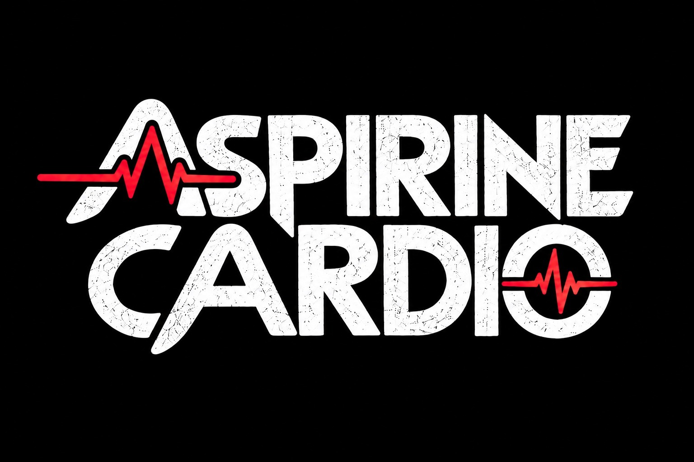

Un remède contre le blues du cœur !
Prochains concertsConcerts
Prochaines dates bientôt annoncées — restez branchés !
Concerts passés
Bio
Aspirine Cardio est un remède contre le blues du cœur !
Les 5 membres du groupe genevois soignent avec un répertoire blues-pop-rock-fusion, partiellement composé par eux-mêmes et partiellement repris « à leur sauce ».
Basse, guitare, section rythmique, harmonica et chant au féminin vous transmettront leurs émotions, rôdées au fil du temps par l'amitié qui les lie et par leur amour de la musique « vivante ».
À déguster sans modération !
- Chant Christa Kaenzig-Burkhard
- Basse Michel de Choudens
- Guitare Allen Hawyer
- Batterie Patrick Lanfranconi
- Harmonica Flop de Choudens